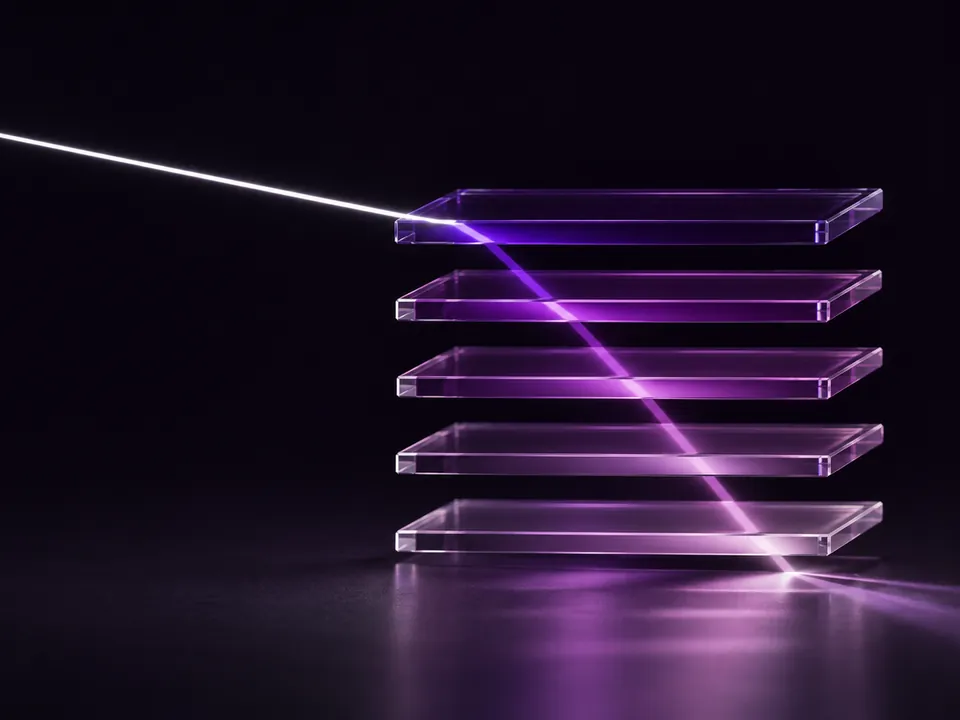
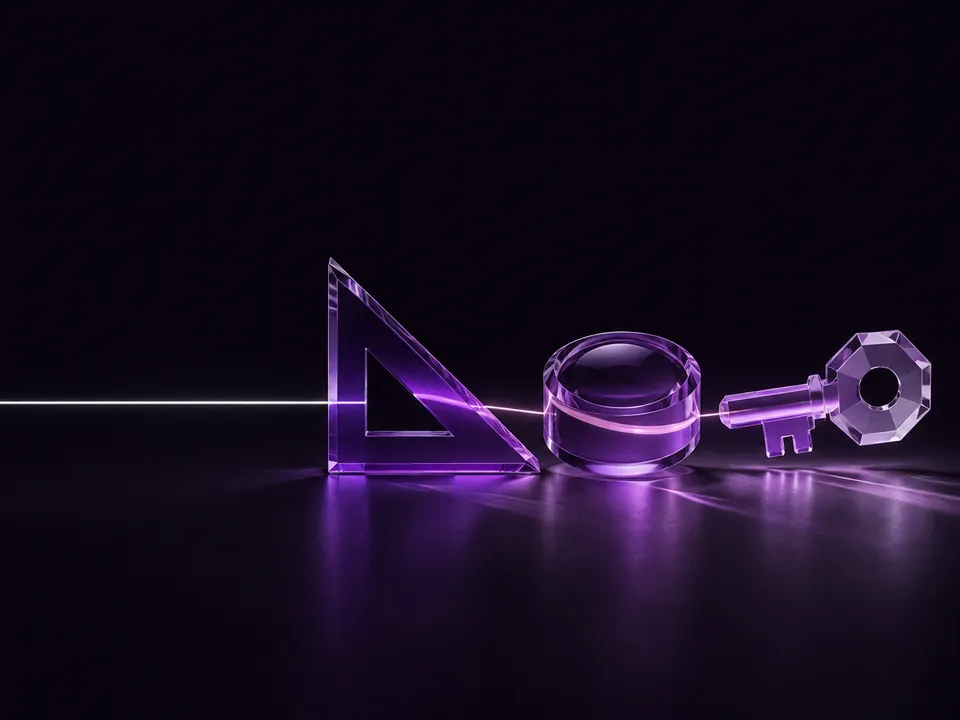
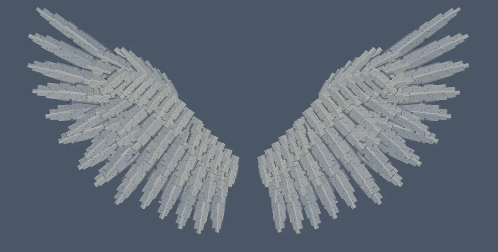
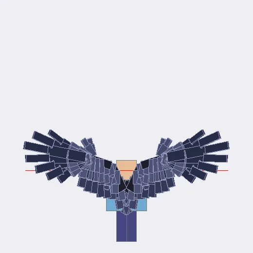
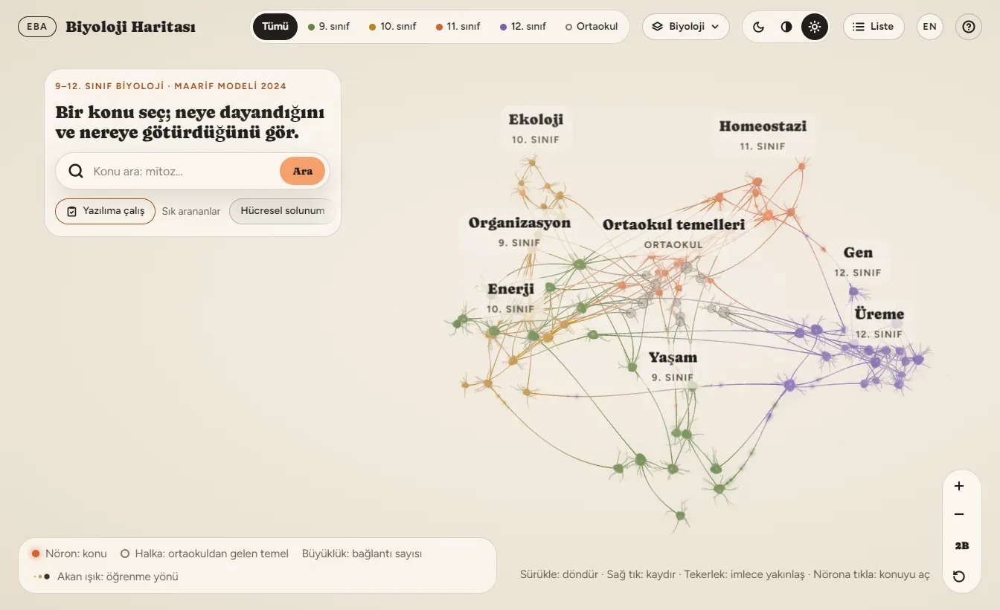

One lab, seventeen projects. All of them public.
Tools
- VerinodaDeveloper tool · 0.5.0 (beta), 25 Oct 2026Evidence-first code intelligence for coding agents. Every answer is a claim, every claim a file:line.
 Illustration
Illustration - Verinoda SymbiosisClaude Code modVerinoda and Claude Code together: a live pane that keeps the index fresh and reviews commits.
 Illustration
Illustration - ps-agentResearch and design repo · Stage 1; no working product, no ps-agent plugin to download yetA personal AI panel inside Photoshop: design docs, a threat model and Photoshop 28 risk spikes. No working product yet.

Illustration - Claude Skill ArchiveClaude skillsClaude skills we made ourselves and how they were made: each at its latest version.

Illustration - Fable OrchestrationClaude Code skill and panelA Claude Code skill in which an expensive main model directs and work is spread across cheaper models by rank, and the panel that edits it.
 Illustration
Illustration
Games and mods
- SupernaturalENGMinecraft mod · Early Access 0.1Seasons 1–5 of Supernatural, turned into a Minecraft mod with its own rules.
 Illustration
Illustration - Kansas-caelesteMapLawrence, Kansas at 1 block = 1 metre. A world baked from real elevation and road data.
 Illustration
Illustration - Angel Wings (AngelRanks)Minecraft plugin and models · Hobby prototype; the 3D wing design was shelved as a mod, the models are an archive/prototypeAnimated 3D angel wings for Minecraft: the AngelRanks Paper plugin, its resource pack and Blockbench wing prototypes.

Real screenshot - Angel Wings 3D3D model and viewer · Fan-made and unofficial; the .bbmodel file was not opened and tested in BlockbenchAn animated angel-wing model inspired by Supernatural (Blockbench .bbmodel) with a 3D viewer in the browser. Fan-made.

Real screenshot - Zombie Survival (Roblox)Roblox game · Prototype stage; no published Roblox experience existsA co-op zombie survival prototype for Roblox inspired by 7 Days to Die, shipped as an .rbxl place file you open in Roblox Studio.
 Illustration
Illustration
Apps
- DersTakipCODesktop appAn offline lesson, student and income tracker for private tutors.
 Illustration
Illustration - WebcordWeb appAccountless voice and text chat. A nickname and a room code are enough; audio flows browser to browser.
 Illustration
Illustration - Microphone BridgeWeb appStreams a phone or computer microphone live to a Bluetooth speaker.
 Illustration
Illustration - Talk BuddyMobile app · Beta 0.9.0; not a diagnostic tool and no substitute for a specialist's assessmentA voice-first, errorless, game-like learning app for children who need support with speech and language development.
 Illustration
Illustration - MidnightSunWindows desktop app · Version 1.0.0; per the README, end-to-end streaming between two computers was not tested separatelyLow-latency game streaming for Windows: NVENC, a custom UDP protocol (GSMR), Opus audio and a keyboard, mouse and gamepad back-channel.
 Real screenshot
Real screenshot - EBA Biology MapWeb app · Independent educational tool, not affiliated with MEB/EBA; the topic structure was prepared by hand and may contain errorsA web app that shows grade 9–12 topics as an interactive neural network, with prerequisites, MEB sample exams and source links.

Real screenshot - Video Downloader and Format ConverterDesktop app · Version 1.4.0A four-tab desktop app: it downloads video and audio, converts file formats, repairs unfinished recordings and brings a microphone voice forward.
 Illustration
Illustration
Let's talk.
For teams, partnerships, press and research: tell us what you are building and where you get stuck. We read every message.